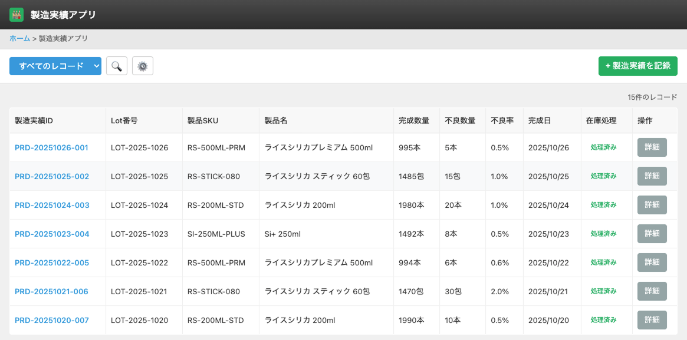
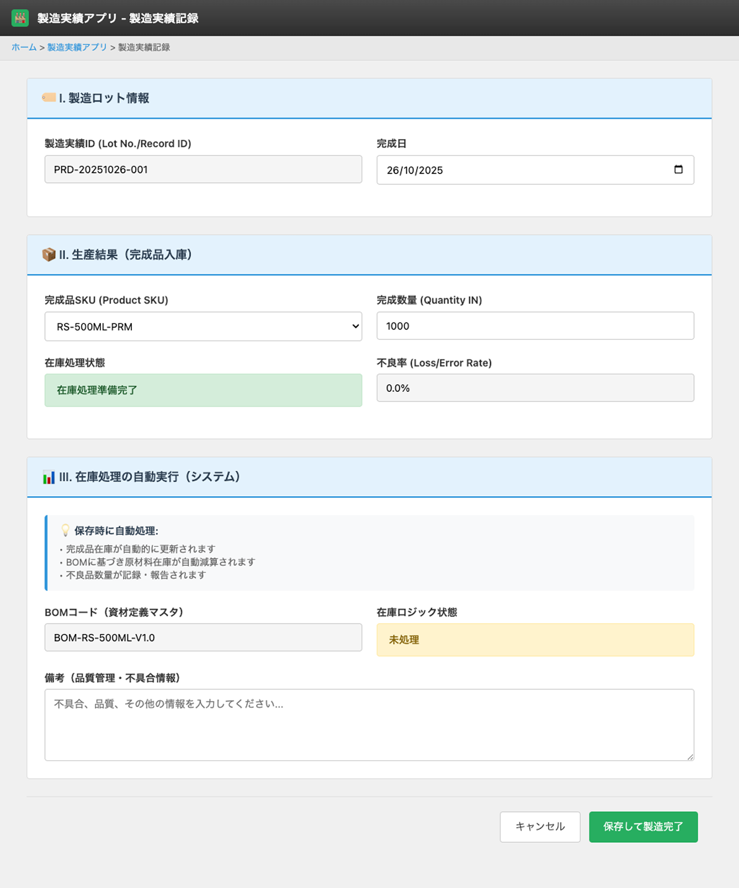

UI Spec
Production App
Version 1.0 / 作成日: ________
UI Screen Specification – 製造実績アプリ（Production / Manufacturing Results App）
対象画面: 製造実績一覧 / 製造実績詳細
想定利用者: 製造担当、現場リーダー、在庫管理担当（Credie 内部ユーザー）
1. 画面の目的（Purpose）
製造実績アプリは、製造現場で完成した製品ロットの情報を登録し、
在庫・BOM と連携して次の処理を一元的に管理するための中核アプリです。
- ① 完成品の入庫起点となるデータ登録（Physical Stock への IN のトリガー）
- ② BOM に基づく原材料の自動引落（Logic Stock 減算）の起点
- ③ 完成品ロットと原材料ロットの紐づけによるトレーサビリティ管理
生産現場では「生産完了 → 製造実績登録 → 原材料引落 → 入庫タスク作成」という流れで運用し、
在庫管理アプリ（Logic Stock / Physical Stock）および Task App と連携します。
2. User Scenario（利用者ストーリー）
2.1 製造担当者のフロー
- 1日の生産が完了したタイミングで、製造担当者が Production App で「新規レコード作成」を実行する。
- 完成した製品の SKU、Lot 番号、完成数量、不良数量などを入力し、レコードを保存する。
- 保存後、システムが BOM を参照し、必要となる原材料の消費数量を自動計算して明細エリアに表示する。
- 担当者は原材料と数量を確認し、問題なければ「原材料引落」ボタンを押して論理在庫の減算処理を実行する。
- 原材料引落が正常に完了すると、在庫処理ステータスが更新され、必要に応じて「入庫タスク作成」ボタンを押す。
- 入庫タスクは Task App に作成され、倉庫担当が実際の入庫処理（Physical Stock への反映）を行う。
2.2 在庫管理担当のフロー
- Task App の入庫タスク一覧から、Production App で作成された入庫タスクを確認する。
- 実際に倉庫へ入庫し、Task App 側で入庫数量を確定する。
- 入庫タスク完了後、Physical Stock アプリの在庫数量が更新され、その結果は必要に応じて Production App やレポートから参照可能。
3. 主な機能（Main Functions / Business Impacts）
- ✔ 製造ロット単位での完成数量・不良数量・完成日などの実績登録
- ✔ BOM マスタ参照による原材料消費量の自動計算と表示
- ✔ 原材料の Logic Stock 減算処理（原材料引落）
- ✔ 完成品を倉庫に入庫するための入庫タスク自動生成（Task App 連携）
- ✔ 完成品ロットと原材料ロットの紐づけによるトレーサビリティ管理
- ✔ 在庫処理ステータスの可視化（未処理 / 原材料引落済 / 入庫タスク作成済 など）
4. Scope / Out of Scope
4.1 Scope
- 製造ロット単位の実績登録（SKU、Lot 番号、完成数量、不良数量、完成日、担当者など）
- BOM マスタとの連携による原材料リスト・使用数量の算出
- 原材料引落（Logic Stock 減算）のトリガー処理
- 入庫タスク作成（Task App へのレコード連携）
- 在庫処理ステータスの管理と表示
- 品質メモ・備考の管理
4.2 Out of Scope
- 製造指示書の発行・ラインスケジュール管理（別システム前提）
- 詳細な品質検査項目の管理（別途 Quality App などで管理する想定がある場合）
- 入庫作業そのもの（実作業および数量入力）は Task App 側の画面で実施
- 原材料の購買・入庫（PO App / Stock App 側で管理）
5. 画面レイアウト（Screen Layout）
5.1 製造実績一覧画面（List View）
製造実績レコードを一覧で表示し、製品 SKU / Lot / 完成数量 / 不良率 / 完成日 / 在庫処理状況 を一目で確認できる画面です。
| 項目名 | 説明 |
|---|
| 製造実績ID |
Kintone 自動採番の一意 ID。クリックで製造実績詳細画面へ遷移する。 |
| Lot 番号 |
製造ロット番号。現場で管理しているロット体系に合わせて入力。 |
| 製品 SKU |
完成した製品の SKU（Product Master 参照）。 |
| 製品名 |
SKU に紐づく製品名。 |
| 完成数量 |
製造された完成品の数量。 |
| 不良数量 |
廃棄・不良となった数量。 |
| 不良率 |
不良数量 ÷ 完成数量。表示のみ（計算ロジックは内部実装）。 |
| 完成日 |
製造完了日。 |
| 在庫処理 |
原材料引落・入庫タスク作成の状況（未処理 / 原材料引落済 / 入庫タスク作成済 など）。 |
| 操作 |
詳細ボタン。クリックで詳細画面へ。 |
5.1.1 一覧画面の主な UI 要素
- 「＋ 製造実績を記録」（新規作成ボタン）
- 絞り込み条件（Lot 番号、SKU、完成日、在庫処理ステータス）
- 標準の並び替え（完成日降順など）
5.1.2 スクリーンショット

図1. 製造実績一覧画面（Production List）
5.2 製造実績詳細画面（Detail View）
個別の製造ロットの詳細情報と、BOM 展開による原材料消費、在庫処理ステータスを確認・操作する画面です。
入庫処理そのものは Task App 側で実施し、本画面はその起点と記録を管理します。
5.2.1 セクション構成
- A. 製造ロット情報
- B. 在庫処理ステータス
- C. 原材料消費（BOM 展開）
- D. メモ・品質情報
- E. 操作ボタン
A. 製造ロット情報
| 項目名 | 説明 |
|---|
| 製造実績ID |
自動採番レコード ID。 |
| 完成日 |
製造が完了した日付。 |
| 製品 SKU |
完成品 SKU。Product Master から選択。 |
| 製品名 |
SKU に紐づく名称。読み取り専用。 |
| Lot 番号 |
製造ロット番号。自由形式だが現場ルールに従う。 |
| 完成数量 |
完成した良品数量。入庫タスク作成時に使用される。 |
| 不良数量 |
不良・廃棄となった数量。 |
| 不良率 |
不良数量 ÷ （完成数量 + 不良数量）など、定義に合わせて計算。表示のみ。 |
| 製造担当者 |
このロットの生産を担当したユーザー名。 |
B. 在庫処理ステータス
| 項目名 | 説明 |
|---|
| 原材料引落ステータス |
未処理 / 処理中 / 処理完了 / エラー など。原材料引落ボタン実行結果で自動更新。 |
| 入庫タスクステータス |
未作成 / 作成済 / キャンセル など。Task App のタスク生成状況に応じて更新。 |
| 在庫処理メッセージ |
エラー内容や警告（在庫不足など）を表示するフィールド。 |
C. 原材料消費（BOM 展開）
完成品 SKU に紐づく BOM を展開し、完成数量に応じた原材料使用量を自動計算して表示します。
原材料ロットの選択により、トレーサビリティ情報を保持します。
| 項目 | 説明 |
|---|
| 資材コード / 名称 |
BOM マスタから自動抽出される原材料の SKU / 名称。 |
| 基準使用量 |
1 個あたりの使用量（BOM に登録されている値）。 |
| 使用数量 |
完成数量 × 基準使用量。原則自動計算・表示のみ。 |
| 資材ロット |
実際に使用した原材料ロットを選択。必須入力（トレーサビリティのため）。 |
| ロット在庫残数 |
選択された原材料ロットの現在在庫。参考表示。 |
D. メモ・品質情報
| 項目名 | 説明 |
|---|
| 品質メモ / 備考 |
ライン停止、設備トラブル、不良発生要因など品質管理に関する自由記述欄。 |
| 添付ファイル |
検査結果シート、写真、報告書などを添付可能なファイルフィールド（必要に応じて）。 |
E. 操作ボタン
-
原材料引落：
BOM 展開された原材料について Logic Stock を減算する処理を実行。
成功時は原材料引落ステータスを「処理完了」に更新し、在庫不足などエラーの場合はメッセージを表示。
-
入庫タスク作成：
完成数量・製品 SKU・Lot 番号をもとに Task App に入庫タスクを1件生成する。再生成は原則不可（管理者のみ例外対応）。
-
編集：
完成数量・不良数量・品質メモなどを修正する標準編集ボタン。
-
削除：
誤登録レコードを削除（権限は管理者のみ想定）。在庫処理済みレコードの削除は制限する方針を検討。
5.2.2 スクリーンショット

図2. 製造実績詳細画面（Production Detail）
6. お客様に確認いただきたい点
- 製造実績として必要な項目（Lot 番号、完成数量、不良数量、品質メモなど）は十分でしょうか？追加で管理したい項目はありますか？
- BOM 展開の考え方（完成数量 × 基準使用量）や端数処理のルールに、現場ルールとの乖離はありませんか？
- 原材料ロットを必須入力とする運用で問題ないでしょうか？（トレーサビリティ要件）
- 原材料引落、入庫タスク作成のタイミングと権限（誰がいつ実行するか）について、運用イメージに差異はありませんか？
7. 開発向けメモ（Dev Notes）
- BOM マスタ（BOM App）との参照が前提。完成品 SKU から BOM を一意に取得できないケースがある場合はエラーとする。
- 原材料ロットは Inventory / Physical Stock 側のロット情報と整合性を保つ必要がある。
- 原材料引落と入庫タスク作成は、二重実行を防ぐためフラグ管理を行う（再実行時は警告表示）。
- 在庫不足の場合は原材料引落処理をロールバックし、ユーザーへメッセージ表示。
- 将来的に生産計画との連携を行う場合に備え、製造指示IDなどの拡張フィールドを追加できるようにしておく。